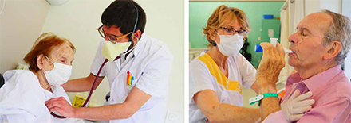

Pays Basque
L'après-Covid à Cambo
Les soignants de Cambo-les-Bains ont mis à profit «les 10-15 jours» d’avance sur le Grand Est et la région parisienne pour se former à accueillir les patients qui sortent de l’hôpital. PHOTOS BERTRAND LAPÈGUE
En coulisses - Les huit centres médicaux de la station thermale accueillent des patients guéris du coronavirus dans des ailes dédiées. Les autres soins de suite restent assurés
Sur les 600 lits d'hospitalisation proposés en soins de suite à Cambo-les-Bains, la moitié est " spécialisée dans la réhabilitation de l'appareil respiratoire ", selon Nicolas Bridoux, directeur de la clinique Landouzy et représentant de Médicambo. L'association fédère les huit établissements de santé de la station thermale, où le célèbre convalescent, Edmond Rostand, décida de s'installer il y a 120 ans.
" Historiquement, notre coeur de métier est la rééducation respiratoire ", poursuit Nicolas Bridoux. " Nous soignons des pneumopathies à longueur d'année, même si d'autres spécialités sont apparues depuis. " Selon le maire de Cambo, Christian Devèze, le secteur médical emploie près de 1 000 personnes dans la commune.
Dans la lutte contre le coronavirus, les cliniques de Cambo sont donc en seconde ligne. Depuis le début de la crise, elles ont accueilli une vingtaine de patients atteints du Covid-19, passés par l'hôpital pendant deux à trois semaines. Des convalescents, issus de la région, qui sont accompagnés cinq à 15 jours.
" Ils nous sont adressés quand ils ne sont plus contagieux ", précise Nicolas Bridoux. " Localement, le Centre hospitalier de la Côte basque (CHCB) est le seul site qui accueille des patients contaminés, en réanimation ou dans son service des maladies infectieuses, tandis que les autres établissements de santé, comme la clinique Belharra à Bayonne ou la polyclinique de Saint-Jean-de-Luz s'occupent de tous les patients hors Covid. " Une stratégie définie dans le cadre du groupement hospitalier de territoire, qui rassemble les acteurs publics et privés de la santé au Pays basque. Obligatoire depuis 2016, l'instance est présidée par le directeur du CHCB, et était, jusque-là, un espace d'échange entre professionnels sur des thèmes transversaux comme le sport-santé.
" Ne pas faire entrer le virus "
L'apparition de la pandémie a fait passer le groupement de la théorie à la pratique, avec une organisation territoriale du " qui fait quoi " à partir du centre hospitalier de Bayonne. " L'entente est très bonne entre les différents acteurs, même si nous devons nous référer à l'hôpital pour le moindre dépistage ", poursuit Nicolas Bridoux.